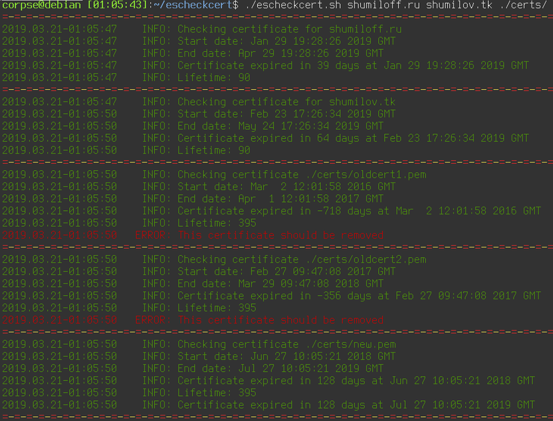

Контейнер-пустышка для overlayed сетей docker swarm

В эфире рубрика "Костыли и Велосипеды".
Не так давно добрались мои руки до docker swarm. Только не нужно напоминать о том, что docker на грани банкротства, а кубернетес правит миром окрестрации контейнеров. Подробно объяснять, что это такое, я не буду. И так достаточно много статей и документации на эту тему. По сравнению с kubernetes, swarm намного легче и проще в обращении, не требует установки и практически не требует настройки и, что удобно, позволяет пользоваться почти теми же docker-compose файлами с минимальными изменениями для деплоя. Если контейнеров немного, то городить кластер на kubernetes не имеет смысла, swarm для этого вполне подойдёт.
О правильной остановке внешних дисков и победившей контейнеризации

Надо оставить тут заметку, чтобы не потерять. Возникла у меня проблема - накрылась в очередной раз от периодических отключений питания и отсутствия бесперебойника файловая система на домашнем сервере. Можно было конечно восстанавливать её работоспособность, но объективно было пора переходить на новую. Так как сервер в своё время стоял под телевизором и какое-то время выполнял роль ТВ приставки с Kodi и прочей мультимедией, то на сервере было много всего лишнего, поэтому наиболее идеологически верным было поставить всё с нуля и перенести лишь необходимое. До этого я пользовался proxmox, но уже давно мне не нужны были честные виртуальные машины (а когда они будут нужны, проще на рабочей машине поднять виртуалку в VirtualBox), а все необходимые мне сервисы я давно перенёс в докер.
Теги: админское, docker, hardware, linux, soft
Как уменьшить размер контейнера с python проектом

Для многих небольших микросервисов и проектов я использую python. В то же время контейнеры с python внутри не отличаются компактностью. Сегодня на примере одного проекта попробую проиллюстрировать, как избавить контейнер от лишнего веса.
Теги: админское, containers, docker, python
Установка Ansistrano на Debian и решение проблем

Не так давно появилась необходимость реализовать CI/CD. Подумав, решил разбить это на две части - сборку и деплой контейнеров и отдельно - на деплой кода. Вторую часть решил реализовать с помощью ansistrano - это аналог capistrano, только выполненный в виде модуля для ansible. Почему не стал делать статические контейнеры с кодом? Хотя бы потому, что в случае использования ansistrano, роллбек проходит практически мгновенно, а это большой плюс. Когда-то я уже поднимал ansistrano, но на этот раз всё оказалось несколько сложнее.
Правильное отключение SWAP раздела в Linux Mint

До того, как я купил себе ноутбук, я предварительно искал информацию о том, с какими проблемами мне придётся столкнуться при установке линукса. Судя по тому, что я нашёл, мне светило пропатчить модуль ядра для того, чтобы заработал тачпад и собрать модуль драйвера Wi-Fi из исходников. Это конечно, совершенно не rocket science, но со временем начинаешь ценить время и удобство, хочется побольше вещей, которые просто работают, работают хорошо и из коробки.
Последние лет шесть я работал на самосборном дистрибутиве на базе debian. И всё было бы ничего, но поддержка этого дистрибутива в актуальном состоянии требовала периодических усилий и существенных затрат времени. Так как debian stable имеет далеко не самую свежую пакетную базу, то заморочек с железом ожидалось больше, чем обычно. Так как у меня уже был положительный опыт установки Linux Mint, я взял последнюю версию 19.1 Tara с xfce4, накатил на ноутбук и - о чудо - всё заработало. Абсолютно всё - тачпад, звук, wi-fi, видео. При всём этом установка заняла в общей сложности всего минут пять.
Скрипт для проверки времени протухания сертификатов

На работе понадобилось отслеживать время протухания различных сертификатов и слать алерты в случае, если до истечения осталось менее, чем N дней. Быстро накидал скрипт, а потом решил расширить его функционал таким образом, чтобы он сам находил все сертификаты в директории и выдавал даты выдачи и истечения срока действия сертификата, время жизни и количество дней, в течение которых сертификат остаётся валидным. В случае, если хотя бы один из сертификатов оказывается невалидным, возвращается ненулевой код возврата, в результате чего можно удобно использовать скрипт для отправки алертов.
if! expired=`./escheckcert.sh domain1.com domain2.com`; then
echo "$expired" | mail -s "Expired certs" admin@domain.com
fiТак же можно помимо файлов сертификатов и путей директорий, содержащих сертификаты, использовать непосредственно доменные имена. Имена файлов, директорий и доменов можно передавать скрипту вперемешку, разделяя пробелами.
Причесал код, выложил на github, доволен. И на работе задачу выполнил и для себя давно подобную утилиту хотел и пост в блог получился.
Про бюрократию, дохлых мышей, инвентаризадницу и админскую магию

Внезапно вспомнился период мой работы в конторе под названием КЭС-Прикамье, это было примерно лет десять тому назад и это была одна из самых бюрократических контор, которые мне удалось повидать в своей жизни. Одним из самых ярких примеров бюрократии была процедура заказа оборудования. Например, у Ивана Ивановича на рабочем месте сдохла компьютерная мышь. Далее начинается целый процесс, в который вовлечено множество людей и который влечёт за собой километры, набеганные по коридору.
Очистка старых смерженных веток в удалённом git репозитории

Не так давно по работе я столкнулся с задачей - необходимо было очистить большой репозиторий на гитхабе от всех веток, которые были полностью смержены в мастер, позднее, чем N дней. Для этого пришлось написать небольшой скрипт, который я просто оставлю ниже.
Теги: админское, shell, automatization
Очистка старой почты в gmail

Раз в пару лет я провожу генеральную уборку в своём почтовом ящике. Так как пользуюсь я gmail аккаунтом, то веб-интерфейс для этого, как выяснилось уже давно, далеко не самое удобное решение. Конечно, у меня уже прописан миллион правил для писем, на основании которых письма сортируются по папкам, но и этого зачастую не хватает. Появляются новые письма, которые не попадают под уже существующие метки и за год таких писем может накопиться скажем, пара миллионов. Более того, есть письма, которые мне нужны в определённой папке какое-то время, например, месяц или два и которые затем можно смело удалить. Так вот, в рамках самого gmail, насколько я понимаю, нет возможности настроить правило с соответствующим функционалом, но есть в принципе несколько методов борьбы с данной проблемой.
Теги: админское
Скрипт для обновления DNS записей CloudFlare

Пост называется "опять не спится" или "как бесплатно завернуть домен второго уровня на ваш домашний динамический IP адрес". Для чего это вам может быть нужно? Вариантов много. Например, это возможность впоследствии поднять дома какие-нибудь сервисы. Например, создать собственное облако для хранения и расшаривания файлов и смотреть в пути фильмы, лежащие на домашнем жёстком диске или развернуть личный блог, сайт-визитку, сервис умного дома, да хоть устроить станцию онлайн вещания - всё ограничивается вашей фантазией, вариантов использования может найтись масса, когда существует возможность.
Теги: shell, automatization, networking, админское
Про внезапный переезд на GitHub Pages

Сегодня ночью случилось сразу несколько событий. Яндекс мигрировал мой домен в Яндекс.Коннект, у меня дома отвалился интернет, а затем выключили и электропитание. Нередкий случай проявления заботы со стороны нашего ТСЖ - нечего ночами сидеть в сети, ложись спать давай, родной. Вот, мы и свет уже тебе погасили. Логичным продолжением было бы отключение воды, отопления, газа и, чего уж там, сразу воздуха, но этого, что меня радует, не последовало.
Через какое-то время мой хороший друг написал в телеграм - мол, блог твой недоступен, на что ласково был обозван "мониторингом мониторинговичем" и примерно в этот же миг снизошло на меня озарение свыше - включили свет и увидел я мир вокруг. И понял я, что это хорошо. Интернет тоже не заставил себя ждать, а вот блог так и остался недоступен. Раньше я бы плюнул на всё и лёг спать, но с мыслью о 52х постах, которые кто-то читает, кто-то даже комментирует, а кому-то, о чудо, и вовсе нравится, я уже уснуть спокойно не мог. Надо было чинить.
Про оптимизацию, тишину, эволюцию, нестандартные решения и домашнюю сеть.

Достаточно давно я собрал свой первый домашний сервер. И довольно много сил я тогда положил на то, чтобы сделать его как можно более тихим, маленьким и потребляющим минимум энергии. Я сменил радиаторы на процессеоре и северном мосту с целью увеличить площадь рассеивающей поверхности. Я искал самые тихие кулеры, я занижал частоту процессора, я сменил кулер в блоке питания и жёсткий диск я выбирал тоже исходя из теж же требований - тихий и потребляющий минимум энергии. В конце-концов, я переместил свой сервер в диван. Мне тогда нужна была платформа для экспериментов и само-собою подразумевалось, что она будет работать 24 часа, 7 дней в неделю.
Зачем ненормальному человеку может быть нужен сервер? Во-первых, это файлопомойка; во-вторых, это медиакомбайн, соединённый с музыкальным центром и имеющий доступ ко всем твоим аудиозаписям, а заодно и к нескольким десяткам онлайн радиостанций; в-третьих файрвол, позволяющий тонко управлять различными подключениями и роутингом между двумя провайдерами и рабочей сетью; в-четвёртых - VPN; в пятых... Продолжать можно долго.
Теги: админское, automatization, networking, python
Отправка логов с OpenWRT/LEDE в syslog и обработка событий
 Вдогонку к статье о syslog-ng решил сделать дополнение о том, как завернуть логи с OpenWRT и настроить реакцию на соответствие какому-нибудь фильтру. Дома у меня есть два Xiaomi MiWifi 3G (оказалось крайне доступным и достойным по характеристикам устройством), три штуки Netgear WNR3500L, которые в текущий момент работают в качестве гигабитных свичей в разных частях квартиры и Nexx 3020 для экспериментов. Одним словом, правило для сохранения логов должно быть общее для всех этих устройств, чтобы не писать шесть отдельных конфигурационных файлов. Начать я решил со своего основного Xiaomi роутера с хостнеймом gw01, на котором стоит OpenWRT 18.06.
Вдогонку к статье о syslog-ng решил сделать дополнение о том, как завернуть логи с OpenWRT и настроить реакцию на соответствие какому-нибудь фильтру. Дома у меня есть два Xiaomi MiWifi 3G (оказалось крайне доступным и достойным по характеристикам устройством), три штуки Netgear WNR3500L, которые в текущий момент работают в качестве гигабитных свичей в разных частях квартиры и Nexx 3020 для экспериментов. Одним словом, правило для сохранения логов должно быть общее для всех этих устройств, чтобы не писать шесть отдельных конфигурационных файлов. Начать я решил со своего основного Xiaomi роутера с хостнеймом gw01, на котором стоит OpenWRT 18.06.
Теги: админское, docker, logging
Про централизованный сбор логов

За последнее время случилось несколько событий, которые привели меня к необходимости централизованного сбора логов в своей домашней сети.
Что и зачем собирать?
- Периодически ночью отваливается интернет от билайна, хотелось бы видеть, что в этот момент происходит с роутером.
- Есть десяток IoT устройств, построенных на ESP8266, которые с прошивкой ESPEasy умеют отправлять логи по сети.
- Жена на новый год подарила управляемый гигабитный коммутатор, почему бы не снимать логи и с него, если уж будет такая возможность?
- Есть сервер умного дома, работающий на отдельной OrangePI Zero.
- Есть около полутора десятков докер и lxc контейнеров с различными службами и pet-проектами, в том числе и этот блог.
Хотелось бы хранить все эти логи в одном месте, чтобы облегчить их анализ, ротацию, архивирование и бекап. Как обрабатывать подобную информацию - это уже отдельная задача, но для начала эту информацию нужно собрать.
Теги: админское, docker, logging
Где могут пригодиться графики

Пару месяцев назад я нашёл для себя неожиданно полезное применение графиков в своей работе. И нет, это не мониторинг в классическом понимании этого слова. Это наколенные прогнозы.
Описание задачи
Есть у нас в jenkins одна джоба, которая производит довольно длительную операцию с базой данных. Размер базы около 100Гб, самый долгий этап - обработка таблицы почти в 60 миллионов записей. Иногда этот процесс проходил за 7 часов, иногда за 21 час и я пытался обнаружить причину, по которой получается такая разница во времени обработки данных. Проблема была в том, что понять, насколько быстро выполняется очередная ревизия джобы из километрового лога с цифрами было достаточно сложно. Скрипт раз в 30 секунд выдавал количество обработанных строк и приходилось брать разницу в этом количестве на каком-то временном периоде и затем сравнивать её с аналогичным прошлым, позапрошлым и, возможно, поза-поза-чёрт-знает-сколько-прошлым запуском. Ведь нет смысла ждать и нагружать мощности, если за час работы скрипта можно определить, сколько примерно он будет работать. Но всё оказалось не так просто. Зависимость количества обработанных строк за единицу времени оказалась нелинейной и чтобы понять характер работы, мне понадобился график.
Ready for production
- Ты видишь контейнер?
- Вижу.

- И я вижу. А его нет!
Достаточно давно я заметил где-то фразу о том, что "docker is ready for production". С тех пор периодически вспоминаю её, каждый раз, когда сталкиваюсь с какими-либо проблемами разного масштаба, связанными с докером. Не поймите меня неправильно, мне нравится эта технология, но для меня странным остаётся тот набор детских заболеваний, которыми этот продукт страдает во вполне зрелом возрасте. Так же не понимаю этого дикого ажиотажа вокруг именно докера, когда всё что нужно и не нужно, пытаются затолкнуть в контейнер, не взирая на то, насколько это удобно и целесообразно в текущей ситуации. Создаётся впечатление, что во-первых, раньше не было никакой контейнеризации в принципе - ни jails на BSD, ни OpenVZ и LXC на линуксе, а во-вторых - и сейчас нет никаких иных технологий, кроме докера - ни snap/flatpack (да-да, иксовые приложения для десктопа тоже пытаются завернуть в докер), ни virtualenv для пайтона - ничего подобного, ни пакетов, ни средств вроде puppet/ansible. Конечно, у докера есть удобные средства доставки, с этим никто не спорит, но не понятно, почему выстрелил в своё время именно он, что его сделало таким "модным, стильным, молодёжным". Скажем, OpenVZ мне нравился откровенно больше, чем LXC, но и тем и другим я пользовался задолго до того, как появился докер. Что помешало обрасти средствами доставки и прочими плюшечками тому же OpenVZ? Отсутствие нативной поддержки в ядре?
Малышам о минералах
Так называлась одна из любимых книг моего детства. После неё я ещё несколько лет собирал по песочницам разные камни, коих у меня была целая коллекция. Она, как и многое другое, благополучно канула в лету. Но это так, лирическое отступление.
У нас было две версии руби из репозитория, 75 гемм, 2 версии thin сервера, ящик циклических зависимостей, пара попыток поставить отдельный environment и куча разных конфигов всех сортов и расцветок. Не то, чтобы этого было достаточно для того, чтобы поднять проект, но если связался с руби, уже трудно остановиться. Единственное, что вызывает у меня опасения - это пакеты из стока дистрибутива. Нет ничего более беспомощного, безответственного и испорченного, чем руби окружение, поставленное из стока, с установленными поверх геммами. Я знал, что рано или поздно мы перейдём на эту дрянь.
Примерно так год назад выглядел мой отчёт начальнику на его вопрос - "как там у нас с переездом редмайна на свежее окружение?"
Сам себе хостинг или о недооценённых утилитах
- Ага-а-а!

О чём вы думаете, когда слышите аббревиатуру FTP? На меня накатывает ностальгия. Сразу вспоминаются всякие уютные ламповые локалочки, сетевые карты rtl8139, серенькие восьмипортовые коммутаторы D-Link в пластиковых корпусах, папки Public и Private, полные варезом - фильмы, музыка, софт, игры... Одним словом, машинка времени в моей голове телепортирует меня куда-то лет на 15 назад. Много воды утекло с тех пор, но когда кто-то просит совета, как построить себе миниатюрный хостинг, часто в числе прочего я в том или ином виде получаю вопрос: "как поднять FTP"? И каждый раз меня это удивляет. А чем sftp не угодил? Да, это медленнее, но во-первых, скорость интернет соединения сейчас уже не та, что была 15 лет тому, во-вторых, у sftp на борту шифрование и в-третьих, sftp практически всегда уже есть там, где присутствует openssh.
Да, sftp, реализованный средствами OpenSSH не лишён ряда недостатков. Хотелось найти некое решение, которое бы позволило быстро и просто реализовать доступ к машине для разных пользователей, для каждого в свою папку, желательно с chroot. Всё заканчивалось длинными ролями на ансибле, которые переписывали конфиги openssh, добавляли пользователей в нужные гргуппы, ставили пакет управления расширенными правами доступа, дёргали всякие setfacl и прочее. И тут меня попросил мой хороший друг (Иван, спасибо тебе!) помочь ему настроить сервер, а пользователям в качестве шелла поставить MySecureShell. Ранее я с таким зверем не сталкивался, да и ни от кого из моих знакомых за те почти 15 лет, что я общаюсь с linux, не слышал. Судя по всему, это не особо популярное решение. Я бы сказал, незаслуженно обойдённое вниманием. Да вы только посмотрите на их логотип! Похоже, это пингвин, прямо поверх которого начали разводить печатную плату (что похоже, сказалось на его настроении), при этом он ещё кому-то угражает двумя логотипами OpenBSD! Интересно, на каких веществах сидел автор? Ладно, этот вопрос оставим наркологам. Лучше посмотрим в конфигурационный файл. Почитав, что там написано, я понял, что эта штука умеет всё, о чём я мечтал и многое из того, о чём я мечтать не смел.
Теги: ssh, shell, sftp, админское
Немного об автоматической генерации паролей
Зачастую возникает необходимость сгенерировать для какой-то цели пароль. Преимущественно это пароль, состоящий из некоторого количества цифр и букв разного регистра.Иногда требуется сгенерировать несколько паролей сразу. Например, для обновления паролей для целой группы пользователей в скрипте или просто хочется выбрать наиболее удобный для набора. Пересмотрев несколько решений, я решил снова ездить на своих велосипедах, так как они имеют минимум зависимостей.
Теги: shell, automatization, админское
АСПЕКТЫ НАСТРОЙКИ СЕТИ В QEMU. ОБЪЕДИНЕНИЕ ИНТЕРФЕЙСОВ НА КАНАЛЬНОМ УРОВНЕ.
Это репост статьи от новогодней ночи 31 декабря 2008г. - 1 января 2009г.
Доброго времени суток. Вечер. 31 декабря 2008 года. Чем заняться человеку в такое время? Правильно! Начать писать статью на permlug, чтобы поделиться опытом. :)
Теги: virtualization, qemu, networking, админское